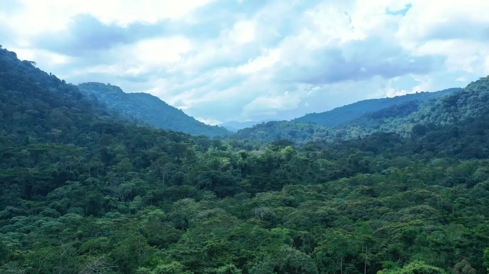

The Virunga volcanoes do not recognise the border between Rwanda and Uganda. A thoughtful journey can use that geography to create something rare: two distinct gorilla encounters held together by one forested mountain story.
Why travel through both Rwanda and Uganda?
Rwanda's Volcanoes National Park and Uganda's Mgahinga Gorilla National Park sit within the wider Virunga landscape. They share the drama of high volcanic slopes, bamboo forest and cloud, yet the approach to each feels different. Linking them creates contrast without forcing the itinerary to cover great distances.
Kigali provides the most coherent gateway for this particular route. From the capital, a private drive leads north and across the land border into Uganda's Kisoro region. After the Mgahinga stay, the journey returns to Rwanda and continues to the ridge country near Volcanoes National Park before ending in Kigali.
The most elegant version is not rushed. A seven-night structure gives both countries three meaningful nights in the mountains, with the first night in Kigali protecting against tight international connections.
What a gorilla day truly asks of you
The encounter begins long before a gorilla is visible. After a briefing, trackers lead small groups into terrain that can be steep, wet and uneven. The family may be close or several hours away; wildlife decides the distance. Official guidance should always carry more weight than expectation.
Once the group is located, viewing is normally limited and conducted under strict conservation rules. Uganda Wildlife Authority guidance sets a minimum tracking age of 15, limits visitor numbers, asks travellers to maintain the required distance and prohibits trekking when someone is ill. Rwanda also sets the minimum age at 15. These are not minor conditions: respiratory illness can threaten the animals travellers have come to see.
Preparation should therefore be practical. Broken-in waterproof footwear, gloves for gripping vegetation, light rain protection and layered clothing matter more than immaculate safari styling. Porter support can make the day more manageable while contributing directly to local livelihoods. Fitness, mobility and any medical concerns should be discussed before permits are committed.
Conservation context
The forest is the larger story.
Gorilla encounters depend on intact habitat, patient tracking and the local stewardship that protects the forest beyond a visitor's hour inside it.

Build recovery into the itinerary
Two gorilla treks on consecutive days would be possible on paper and poor in practice for many travellers. A better sequence gives the body and mind time to reset. In Uganda, a golden-monkey trek through the bamboo zone can offer a lighter but still active second day. It may instead become a rest morning, depending on the first trek.
The cross-border day can carry cultural depth without becoming overfilled. Published Volcanoes Safaris itineraries pair Mount Gahinga Lodge with the Gahinga Batwa Village and a heritage experience before continuing to Virunga Lodge in Rwanda. Such visits should be hosted with dignity and understood as living culture, not staged decoration.
After the Rwanda gorilla trek, the final mountain day can focus on conservation, local culture or a demanding hike connected to Dian Fossey's legacy. The best choice depends on energy, weather and what the traveller wants to understand—not on completing every available activity.
Where conservation enters the journey
Gorilla tourism operates within a fragile relationship between protected habitat, animal health and neighbouring communities. That is why the strongest journeys make conservation visible. An expert briefing, a visit linked to the Dian Fossey Gorilla Fund, or a conversation about veterinary care can change the way the trek is understood.
Volcanoes Safaris' published Rwanda–Uganda journey includes community and conservation initiatives around its lodges, including Batwa heritage programming and projects associated with Virunga Lodge. The value is not in collecting project names. It is in learning how long-term protection depends on communities having a meaningful stake in the landscape.
There is no guaranteed sighting
Mountain gorilla groups offered for tourism are habituated to the controlled presence of people, but they remain wild animals moving through wild terrain. Tracking teams provide remarkable expertise; they cannot make the forest predictable. Rain, visibility, the group's movement and a traveller's physical condition can all shape the day.
That uncertainty is part of the experience. A responsible proposal will never promise a specific family, silverback, photograph or duration. It will secure the correct permits, place the accommodation well, explain the rules and create enough time for the journey to succeed on its own terms.
Choosing when to go
Gorilla tracking operates across the year, and no month removes the possibility of rain in a highland forest. Relatively drier periods can make trails more manageable, while greener or quieter months may bring a different atmosphere and value. The decision should balance trail conditions, lodge availability, permit access, wider East African plans and personal tolerance for mud and weather.
Permits are limited, date-specific and governed by the relevant national authorities. They should be treated as the journey's first fixed element. International flights, lodge nights and border logistics are then arranged around confirmed access—not the other way around.
Who this journey suits
Across the Virungas is best for travellers aged 15 and over who are comfortable with early starts, uneven ground and several hours on foot. It is particularly strong for couples, solo travellers, photographers and small private groups interested in conservation and culture as much as the wildlife encounter itself.
It is not a journey to overload. Its luxury lies in expert coordination, an appropriate room at the end of a demanding day, clear border and permit management, and enough quiet to absorb what has happened.
Research notes
Official sources used for this guide
- Volcanoes Safaris: 7-night Dian Fossey Gorilla Safari ↗
- Volcanoes Safaris: Into the Virungas photo essay ↗
- Uganda Wildlife Authority: gorilla and chimpanzee tracking guidelines ↗
- Visit Rwanda: official gorilla tracking guidance ↗
Information was reviewed on 4 August 2026. Park rules, permits, entry requirements, lodge policies, availability and prices can change; Resplendent reconfirms the current position before proposal and booking.
From Journal to Journey
Cross the Virungas with purpose.
Continue into our seven-night Signature Journey framework, then let us refine the permits, properties, pace and conservation experiences around you.